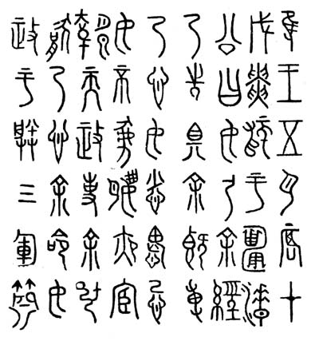

В 771 г. до н. э. под ударами кочевников пала чжоуская столица, правитель Ю-ван оказался в плену, а его сын, Пин-ван, решил перенести столицу на восток, в Чэнчжоу. Начался период истории, получивший название Восточное Чжоу.
Первые три столетия этого периода известны как время Чуньцю. Дело в том, что именно этот отрезок чжоуской истории нашел отражение в летописи «Чуньцю», авторство которой китайская историческая традиция приписывает Конфуцию. Первые события, зафиксированные в летописи, относятся к 722 г. до н. э., последние — к 481 г. до н. э. Письменные памятники этого времени и служат для нас источником сведений об особенностях позднего доклассического древнекитайского языка.
К числу этих памятников относятся прежде всего надписи. Надписи на бронзе сохраняют в это время некоторые особенности, унаследованные от предшествующего периода. Но в них можно обнаружить и новые черты, связанные с содержанием и стилем. Большинство известных в настоящее время надписей на бронзовых предметах эпохи Восточного Чжоу относится к VI в. до н. э. Их датировка нередко облегчается тем, что в них упоминаются исторические деятели, имена которых известны из летописных источников.
Принципиально иной категорией надписей, относящейся к этому же периоду времени, являются тексты на так называемых «каменных барабанах». Это десять стихотворных инскрипций, выгравированных на каменных тумбах, несколько напоминающих по форме древнекитайские барабаны, откуда и происходит их название. Каменные барабаны были найдены на территории современной провинции Шэньси в VII в. Они привлекли внимание ученых прежде всего тем, что их тексты стилистически весьма близки к песням «Шицзина».
«Шицзин» — один из замечательных памятников древнекитайской культуры. В своем современном виде он представляет собой свод песенно-поэтических произведений, часть из которых, будучи обработкой народных песен, восходит к глубокой древности. В целом, однако, язык «Шицзина» принадлежит к тому периоду истории, который мы называем поздним доклассическим древнекитайским языком.
«Шицзин» состоит из нескольких разделов. В первом из них («Нравы царств») песни сгруппированы по территориальному признаку — в соответствии с принадлежностью к царствам Восточного Чжоу: Вэй, Чэнь, Цинь, Ци, Цао и др. Наряду с этим в данном разделе представлены царства, которые в рассматриваемый период уже не существовали, — Бинь, Тан и пр. Первый раздел включает 160 песен, в основе которых, бесспорно, лежат произведения древнего фольклора.
Второй раздел «Шицзина» («Малые оды») не имеет подразделов. 80 произведений, объединенных в нем, — это авторские сочинения, принадлежащие в большинстве своем безымянным поэтам VII–VI вв. до н. э.
В сущности, весьма близок по своим особенностям ко второму и третий раздел «Шицзина» («Великие оды»), включающий 31 стихотворение.
Последний, четвертый раздел «Шицзина» («Гимны») подразделяется на три части: «Гимны Чжоу», «Гимны Шан» и «Гимны Лу». В самой разбивке произведений этого раздела чувствуется сознательный отбор: этим можно объяснить, почему здесь присутствуют гимны, относящиеся только к одному из подчиненных Чжоу царств — Лу. Всего здесь 40 гимнов. В общей сложности, таким образом, в «Шицзине» насчитывается 305 отдельных произведений.
Тот факт, что большая часть памятников этого периода создана не при дворе вана, а в царствах чжухоу, отнюдь не является случайным. Он отражает реальные изменения в политической ситуации, произошедшие после перенесения столицы: ослабление власти чжоуского вана, усиление чжухоу, чьи владения со временем становятся почти полностью независимыми от Сына Неба. Поэтому возможно, что некоторые особенности языка, прослеживаемые в памятниках VII–V вв. до н. э., объясняются не только хронологическими факторами, но и территориальными различиями.
Используемые тексты для уроков 21–25:
урок 21 — «Цинь-гун чжун», 576–537 гг. до н. э., царство Цинь; «Цзинь-гун дянь», 599–581 гг. до н. э., царство Цзинь;
урок 22 — «Чжу-гун чжун», 555–541 гг. до н. э., царство Чжу; «Шу-эр чжун», 536±30 лет до н. э., царство Сюй (?);
урок 23 — «Шу-и чжун», 581–554 гг. до н. э., царство Ци;
урок 24 — «Мин бо», конец VI в. до н. э., царство Ци;
урок 25 — «Янь-эр чжун» и «Ван сунь чжун», точная датировка неизвестна (вероятнее всего, VI в. до н. э.), царство Сюй.

Надпись на колоколе «Шу-и чжун» (фрагмент)
Урок 26: текст надписи на одном из «каменных барабанов» (царство Цинь).
Уроки 25–30: стихотворные произведения из следующих разделов «Шицзина» (название песен — по изданию А. А. Штукина; в скобках — традиционное обозначение раздела):
урок 25 — «Встреча гостей», раздел «Малые оды» (II, I, 1);
урок 26 — «Песнь забытой жены», раздел «Нравы царств», царство Бэй (I, III, 1); «Мышиные ушки», раздел «Нравы царств», Чжоу (I, 1, 3);
урок 27 — «Песнь оставленной жены», раздел «Нравы царств», царство Бэй (I, III, 10);
урок 28 — «Новый дворец» (отрывок), раздел «Малые оды» (II, IV, 5); «На чужбине», раздел «Малые оды» (II, IV, 3); «Песнь жены об оставленном родном доме», раздел «Нравы царств», царство Бэй (I, III, 14);
урок 29 — «Мчалась утешить», раздел «Нравы царств», царство Юн (I, IV, 10); «Чертополох», там же (I, IV, 2); «Песня о невесте, отвергающей жениха», раздел «Нравы царств», Чжао (I, II, 6);
урок 30 — «Ода о клеветниках», раздел «Малые оды» (II, V, 6); «Там просо склонилось теперь», раздел «Нравы царств» (I, VI, 1).
Грамматический строй позднего доклассического языка изучен еще недостаточно. Обобщающих работ по этому периоду не существует.
Надпись на каменном барабане (царство Цинь)
* Грамматический строй позднего доклассического языка изучен еще недостаточно. Обобщающих работ по этому периоду не существует.

В 771 г. до н. э. под ударами кочевников пала чжоуская столица, правитель Ю-ван оказался в плену, а его сын, Пин-ван, решил перенести столицу на восток, в Чэнчжоу. Начался период истории, получивший название Восточное Чжоу.
Первые три столетия этого периода известны как время Чуньцю. Дело в том, что именно этот отрезок чжоуской истории нашел отражение в летописи «Чуньцю», авторство которой китайская историческая традиция приписывает Конфуцию. Первые события, зафиксированные в летописи, относятся к 722 г. до н. э., последние — к 481 г. до н. э. Письменные памятники этого времени и служат для нас источником сведений об особенностях позднего доклассического древнекитайского языка.
К числу этих памятников относятся прежде всего надписи. Надписи на бронзе сохраняют в это время некоторые особенности, унаследованные от предшествующего периода. Но в них можно обнаружить и новые черты, связанные с содержанием и стилем. Большинство известных в настоящее время надписей на бронзовых предметах эпохи Восточного Чжоу относится к VI в. до н. э. Их датировка нередко облегчается тем, что в них упоминаются исторические деятели, имена которых известны из летописных источников.
Принципиально иной категорией надписей, относящейся к этому же периоду времени, являются тексты на так называемых «каменных барабанах». Это десять стихотворных инскрипций, выгравированных на каменных тумбах, несколько напоминающих по форме древнекитайские барабаны, откуда и происходит их название. Каменные барабаны были найдены на территории современной провинции Шэньси в VII в. Они привлекли внимание ученых прежде всего тем, что их тексты стилистически весьма близки к песням «Шицзина».
«Шицзин» — один из замечательных памятников древнекитайской культуры. В своем современном виде он представляет собой свод песенно-поэтических произведений, часть из которых, будучи обработкой народных песен, восходит к глубокой древности. В целом, однако, язык «Шицзина» принадлежит к тому периоду истории, который мы называем поздним доклассическим древнекитайским языком.
«Шицзин» состоит из нескольких разделов. В первом из них («Нравы царств») песни сгруппированы по территориальному признаку — в соответствии с принадлежностью к царствам Восточного Чжоу: Вэй, Чэнь, Цинь, Ци, Цао и др. Наряду с этим в данном разделе представлены царства, которые в рассматриваемый период уже не существовали, — Бинь, Тан и пр. Первый раздел включает 160 песен, в основе которых, бесспорно, лежат произведения древнего фольклора.
Второй раздел «Шицзина» («Малые оды») не имеет подразделов. 80 произведений, объединенных в нем, — это авторские сочинения, принадлежащие в большинстве своем безымянным поэтам VII–VI вв. до н. э.
В сущности, весьма близок по своим особенностям ко второму и третий раздел «Шицзина» («Великие оды»), включающий 31 стихотворение.
Последний, четвертый раздел «Шицзина» («Гимны») подразделяется на три части: «Гимны Чжоу», «Гимны Шан» и «Гимны Лу». В самой разбивке произведений этого раздела чувствуется сознательный отбор: этим можно объяснить, почему здесь присутствуют гимны, относящиеся только к одному из подчиненных Чжоу царств — Лу. Всего здесь 40 гимнов. В общей сложности, таким образом, в «Шицзине» насчитывается 305 отдельных произведений.
Тот факт, что большая часть памятников этого периода создана не при дворе вана, а в царствах чжухоу, отнюдь не является случайным. Он отражает реальные изменения в политической ситуации, произошедшие после перенесения столицы: ослабление власти чжоуского вана, усиление чжухоу, чьи владения со временем становятся почти полностью независимыми от Сына Неба. Поэтому возможно, что некоторые особенности языка, прослеживаемые в памятниках VII–V вв. до н. э., объясняются не только хронологическими факторами, но и территориальными различиями.
Используемые тексты для уроков 21–25:
Надпись на колоколе «Шу-и чжун» (фрагмент)
Урок 26: текст надписи на одном из «каменных барабанов» (царство Цинь).
Уроки 25–30: стихотворные произведения из следующих разделов «Шицзина» (название песен — по изданию А. А. Штукина; в скобках — традиционное обозначение раздела):
Грамматический строй позднего доклассического языка изучен еще недостаточно. Обобщающих работ по этому периоду не существует.